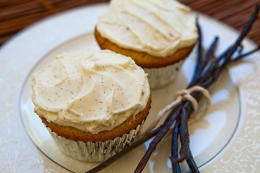

Vanilla Cake Recipe
Here's the recipe for the preparation of a double vanilla cake. The ingridients for cake and frosting are given separately. This recipe prepares the cake for 12 servings.
Ingredients
For Cake:
- 1 ½ cups + 2 tablespoons all-purpose flour
- ¼ teaspoon kosher salt
- 1 ¼ teaspoons baking powder
- ½ cup unsalted butter, room temperature
- 1 cup sugar
- 1 egg + 2 egg whites
- ½ cup whole milk
- ¼ cup sour cream
- 1 ½ teaspoons of vanilla extract
- ½ vanilla bean (or 1 bean if you can spare it)
For Frosting
- ½ cup unsalted butter, room temperature
- 1 ¼ cups of powdered sugar
- ½ vanilla bean (or 1 teaspoon of vanilla extract)
Method of Preparation
- Heat the oven to 350° F. While the oven heats cut open and scrape out the seeds of a vanilla bean. Place the seeds, empty bean, and the milk into a small saucepan. Heat to just under a simmer for a few minutes being careful not to scald the milk. Remove from heat and allow the milk to steep and cool. (Be sure to remove the bean after it cools. Wash it and then place it out to dry so it can be used again.)
- Beat the butter for about 3 minutes on medium speed, then add the sugar and beat until light and fluffy, about 3 minutes. Add the egg and beat for 30 seconds. Add the egg whites, one at a time, beating for 30 seconds each.
- In one bowl sift together the flour, baking powder, and salt. In another whisk together the vanilla steeped milk, vanilla extract, and sour cream.
- Add the flour mixture and the milk mixture to the butter sugar egg mixture in alternating additions (dry-wet-dry method), starting and ending with the flour. Mix until just combined being sure to not overbeat.
- Divide the batter into cupcake papers in a muffin tin and bake at 350° F for 18-20 minutes or until slightly golden brown. Be sure to rotate the cupcakes after the first 15 minutes to ensure even baking. Be sure to keep a close eye as these can get overbaked quickly. Allow to cool on a wire rack. Frost when cooled.
- Beat the butter and slowly add in the powdered sugar. Scrape the seeds out of the vanilla bean (or vanilla extract if using) and beat in.